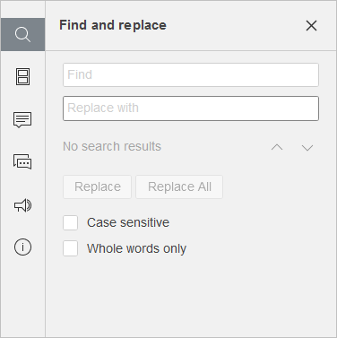

Funkcija pretrage i zamene
Da biste pretraživali potrebne karaktere, reči ili fraze u Presentation Editor-u, kliknite na ikonu koja se nalazi na levom bočnom panelu, ikonu koja se nalazi u gornjem desnom uglu ili koristite kombinaciju tastera Ctrl+F (Command+F za macOS) da biste otvorili mali panel za pretragu ili kombinaciju tastera Ctrl+H da biste otvorili puni panel za pretragu.
Mali panel Pronađi će se otvoriti u gornjem desnom uglu radne površine. Panel sadrži polje za unos teksta za pretragu, broj rezultata pretrage i kontrole za prelazak na prethodni ili sledeći rezultat, kao i za zatvaranje panela.

Da biste pristupili naprednim podešavanjima, kliknite na ikonu .
Otvoriće se panel Pronađi i zameni:

- Unesite pojam za pretragu u odgovarajuće polje Pronađi.
- Ako je potrebno da zamenite jednu ili više pronađenih pojava, unesite tekst za zamenu u odgovarajuće polje Zameni sa. Možete izabrati da zamenite samo trenutno označenu pojavu ili sve pojave klikom na odgovarajuća dugmad Zameni i Zameni sve. Dugme Zameni se takođe nalazi na kartici Početna.
- Za kretanje između pronađenih pojava kliknite na jedno od dugmadi sa strelicama. Dugme prikazuje sledeću pojavu, dok dugme prikazuje prethodnu.
-
Podesite parametre pretrage označavanjem potrebnih opcija ispod polja za unos:
- Razlikuj velika i mala slova – koristi se za pronalaženje samo onih pojava koje su unete sa istim velikim/malim slovima kao pojam za pretragu (npr. ako je pojam „Editor“ i ova opcija je uključena, reči poput „editor“ ili „EDITOR“ neće biti pronađene).
- Samo cele reči – koristi se za označavanje isključivo celih reči.
Prvi slajd u izabranom smeru koji sadrži unete karaktere biće označen na listi slajdova i prikazan u radnoj površini sa obeleženim traženim karakterima. Ako to nije slajd koji tražite, ponovo kliknite na izabrano dugme da biste pronašli sledeći slajd koji sadrži unete karaktere.